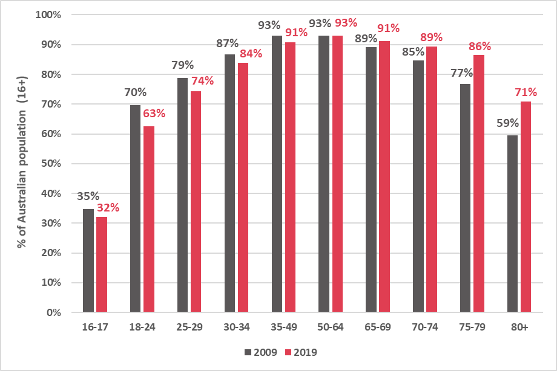
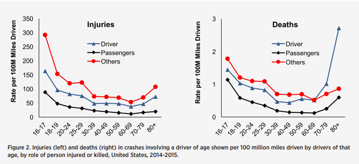

Teaching teenagers how to drive safely and be safe on roads is vital as they are the second largest demographic of road users to be involved in accidents whilst simultaneously being the smallest demographic of drivers. This shows that teenagers are disproportionately more likely to be involved in accidents than any other age group, so it is vital that every possible measure is put in place to reduce these accident rates. This campaign aims to educate teenagers so that they are fully aware of the risks involved in driving and how to mitigate those risks.
Age distribution of drivers
 Source: Roy Morgan (roymorgan.com)Injuries and Deaths of age demographics to rate driven per million
 Source: Foundation for Traffic Safety (aaafoundation.org)The above graph displays the injury and mortality rate on a 100M miliage mileage. Injuries and death rates both share a similar trend: teens hold an extraordinarily high injury and death rate in comparison to those aged 20 and above (with exception of the very elderly).